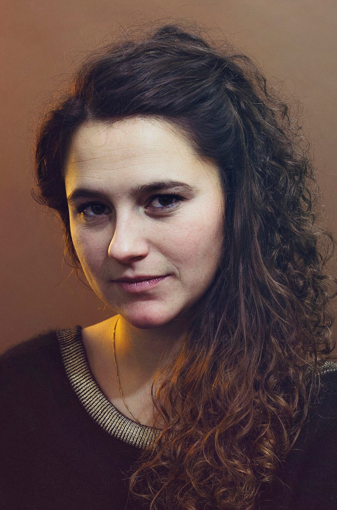

Nuestras tutoras

Bieke Depoorter
Bieke Depoorter es una fotógrafa belga. Las relaciones que establece con sus sujetos son la base de su práctica. Depoorter es miembro de Magnum Photos y ha publicado los libros Ou Menya, I am About to Call it a Day, As it May Be, Mumkin. Est-ce posible?, Sète#15, y Agata
Nan Goldin
Nan Goldin es una artista estadounidense, renovadora de la fotografía documental y narradora de la escena contracultural de Nueva York de los años 70 y 80.

Carrie Mae Weems
Carrie Mae Weems es una artista estadounidense que trabaja con el texto, el tejido, el audio, la imagen digital, y el videoinstalación, y es muy conocida por su trabajo dentro del campo de la fotografía